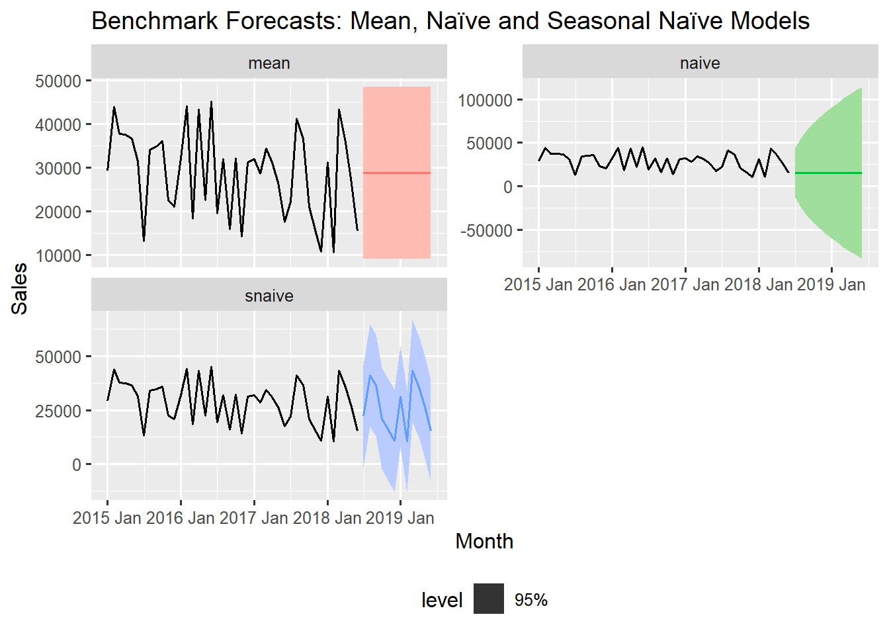

# A tibble: 6 × 2
Period Expenditure
<int> <dbl>
1 1 100
2 2 110
3 3 120
4 4 130
5 5 125
# ℹ 1 more row14 Simple Forecasting Models
In the world of forecasting, complexity does not always equal accuracy. Before we dive into sophisticated algorithms with dozens of parameters, we start with simple benchmark models that serve crucial purposes in any forecasting workflow. These elementary models provide:
- Performance Baselines: If your advanced model cannot beat a simple naive forecast, it is not adding value
- Model Diagnostics: Simple models reveal fundamental patterns and outliers in your data
- Computational Efficiency: Quick to fit and easy to interpret
- Business Understanding: Often more easily explained to stakeholders than complex models
This philosophy is simple: start basic, establish benchmarks, then gradually increase complexity only when it demonstrably improve performance.
14.1 Understanding and Fitting Benchmark Models
Benchmark models are simple, non-complex forecasting techniques used as baseline to evaluate the performance of more sophisticated models. Let us first understand the three fundamental benchmark models we shall be working with.
| Model | Core Principle | Prediction Rule | Example |
|---|---|---|---|
| Mean Model | simple constant | Always predicts the historical average of the series | for our example_data the mean = 137.5 for all future periods. |
| Naïve Model | random walk | Predicts the last observed value \(\hat{Y}_{t+h}=Y_t\) | for our example_data this will be the last Ependiture for the Period, 170.
|
| Seasonal Naïve | seasonal repetition | Predicts the value from the same season in the last period. \(\hat{Y}_{t+h}=Y_{t+h-m}\), where \(m\) is the seasonal period | for our example_data, assuming the seasonal period is 4, then the predictions for the next season will be; 145, 155, 160 and 170. |
14.1.1 Fitting Simple Models with fable
The fable package provides a streamlined syntax for fitting any time series model. We will apply these models to the training set (training_data) of our sales_ts data using the unified fable syntax.
# fit simple benchmark models to our training data
simple_models <- training_data |>
model(
mean = MEAN(Sales),
naive = NAIVE(Sales),
snaive = SNAIVE(Sales ~ lag(12)) # lag 12 for monthly data
)
# display the fitted models
simple_models# A mable: 1 x 3
mean naive snaive
<model> <model> <model>
1 <MEAN> <NAIVE> <SNAIVE>model() is the unified function for fitting all types of time series models in fable. MEAN(Sales) fits a mean model that predicts the historical average and stores it in a variable mean, NAIVE(Sales) fits a naive model that predicts the last observed value and SNAIVE(Sales ~ lag(12)) fits a seasonal naive model using a lag of 12 periods (Months).
The output (simple_models) is a mable (model table), a special type of tibble data structure that stores one or more fitted models for a time series data. Each of the columns represent and contain the fitted model object. If the time series tsibble contains unique keys, the rows inside the mable would represent those keys.
14.1.2 Understanding Model Components
To assess how well a model captures the historical pattern, we extract its fitted values and residuals using the augment() function. Let us now examine what each model has learned from our data
# extract components and parameters from each model
model_components <- simple_models |>
augment()
# View the first few rows of the model components
model_components # A tsibble: 126 x 6 [1M]
# Key: .model [3]
.model Month Sales .fitted .resid .innov
<chr> <mth> <dbl> <dbl> <dbl> <dbl>
1 mean 2015 Jan 29167 28745. 422. 422.
2 mean 2015 Feb 43929 28745. 15184. 15184.
3 mean 2015 Mar 37679 28745. 8934. 8934.
4 mean 2015 Apr 37457 28745. 8712. 8712.
5 mean 2015 May 36575 28745. 7830. 7830.
# ℹ 121 more rowsaugment() extracts the fitted values , residuals and other components from all three fitted models. .model identifies which of the fitted models the data belongs to, .fitted represents the model’s prediction for each time period, .resid is the difference between the actual and predicted values (residuals), and .innov represents the innovations (or shocks) which is the one-step ahead forecast errors. These values are similar to the residuals but are more meaningful in models like ARIMA and ETS.
All these components helps us to understand how each model interprets and attempts to replicate the historical time series data.
14.2 Generating and Visualising Forecasts from Benchmark Models
After fitting the benchmark models to the training data, the net critical step is to generate future predictions and visualise these forecasts along with their associated uncertainty (prediction intervals).
14.2.1 Generating Forecasts
We will now generate forecasts from our simple models. The primary function that will help us do this is forecast(), which is part of the fabletools package.
# generate forecast for the next 12 months
simple_forecasts <- simple_models |>
forecast(h = 12)
# display the forecasts
simple_forecasts# A fable: 36 x 4 [1M]
# Key: .model [3]
.model Month
<chr> <mth>
1 mean 2018 Jul
2 mean 2018 Aug
3 mean 2018 Sep
4 mean 2018 Oct
5 mean 2018 Nov
# ℹ 31 more rows
# ℹ 2 more variables: Sales <dist>, .mean <dbl>forecast(h = 8) generates 12 periods (months) into the future (from July 2018 to June 2019), starting from where the data ended in June 2018. The output includes point forecasts and the distribution forecasts (uncertainty). The output simple_forecasts is a fable (forecast table), which is a special tsibble data structure for representing forecasts. Each row in the fable represents a forecast for a specific time point.
The .mean column is the point forecast (expected future value) which is 28,745 for all periods in the mean model because the mean model predicts the same value for every future point, 15,383 for all periods in the naive model because it just repeats the last observed value for every future period (random walk) and the last 12 Sales values (seasonal period) repeated from the original series data for the seasonal naive model.
The Sales column is the distribution object representing the forecasts and its uncertainty \(N(Mean, \sigma^2)\). For instance the distribution for the first prediction by the mean model is N(28745, 1e+08), this means a normal distribution with a point forecast of 28745 and variance of 100000000 (sd = 10000). The uncertainty in the distribution is the same for all the mean and seasonal naive models but increases with increasing forecast horizon for the naive model.
14.2.2 Prediction Intervals with hilo()
By default the forecast table does not explicitly show prediction intervals but they are calculated internally. We can display them using the hilo() function from fabletools. The intervals are also automatically added when we plot the forecast with autoplot()
# add prediction intervals to the forecast table
simple_forecasts |> hilo(level = 95)# A tsibble: 36 x 5 [1M]
# Key: .model [3]
.model Month
<chr> <mth>
1 mean 2018 Jul
2 mean 2018 Aug
3 mean 2018 Sep
4 mean 2018 Oct
5 mean 2018 Nov
# ℹ 31 more rows
# ℹ 3 more variables: Sales <dist>, .mean <dbl>, `95%` <hilo>hilo() calculates the prediction intervals and adds them to the forecast table output. By default it returns 80% and 95% intervals if no level is specified. Different models have different intervals based on their inherent uncertainty. The naive model typically has wider intervals due to its assumption that the next value could be anywhere near the last observed value. The mean model ’s intervals are constant because the forecast is constant. With the seasonal naive model the intervals widen but the forecast itself repeats the last seasonal cycle, giving it structure.
14.2.3 Visualising Simple Forecasts
Plotting the forecast allows for quick visual comparison of how each benchmark model interprets the series’ future. We can create a comprehensive visualisation to compare our benchmark forecasts with the autoplot() function.
# plot all simple forecasts together
simple_forecasts |>
autoplot(training_data, level = 95, linewidth = 0.7) +
facet_wrap(~ .model, scales = 'free_y', ncol=2) +
guides(colour = "none", fill = "none") +
ggtitle("Benchmark Forecasts: Mean, Naïve and Seasonal Naïve Models") +
theme(legend.position = "bottom")

When the autoplot() function is fed a forecast table (fable object) together with the time series tsibble, it automatically plots the forecasts with the historical data [simple_forecast |> autoplot(training_data)]. Specifying the level (level = 95) adds 95% confidence bands around the forecast values. If no level is specified, it uses the default which is 80% and 95% together. To exclude the confidence bands, set level=NULL. The plot is faceted on the models to get each models’s forecast in a separate panel. The guides(colour = "none", fill = "none") line supresses the redundant legends for th model name.
From the above visualisations we can clearly see each model’s forecast behaviour. A flat forecast line predicting the average value (mean model), a flat forecast line extending the last observed value with rapidly widening intervals (naive model) and a cyclical forecast line that repeats the last 12-month seasonal pattern (seasonal naive model).
14.2.4 Deeper Dive: Visualising Fitted Values and Forecast
For a deeper understanding, we can also plot the individual forecasts separately and then overlay the fitted values on top of the original series with the help of the autolayer() function from ggtime
# make plot for only the seasonal naive model
snaive_model_fitted <- simple_models |>
augment() |>
filter(.model == "snaive") |>
select(.fitted)
snaive_model_forecast <- simple_models |>
select(snaive) |>
forecast(h = "1 year") # same as 12 Months
snaive_plot <- snaive_model_forecast |>
autoplot(training_data, level = 95) +
autolayer(snaive_model_fitted, .fitted, colour = 'red')We extract only the seasonal naive model and plot the predicted values and the actual Sales series overlayed together on the same panel. The autolayer() function is designed to easily overlay components from a tsibble unto an existing autoplot(). This visually demonstrate that the fitted values are simply the actual sales values from 12 months prior (notice how the forecast starts after the first 12 months of the original series).

This final plot provides powerful insight: the SNAIVE model forecast by simply projecting the last observed seasonal cycle into the future.